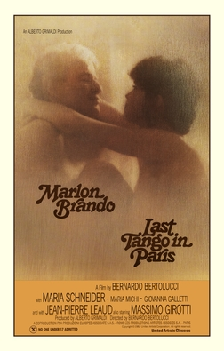

Last Tango in Paris

Bernardo Bertolucci
1972
129 minutes
Wikipedia link
IMDB link
TV Tropes link
This is text.
Time to choose something different:
- Welp. At least there was no actual cannibalism. - Turn to section 97
- That "butter" scene was kind of intense. I wonder what that was like to film... - Turn to section 238
- I bet Brando's character could have used some sort of theatrical grievance counseling to cope with his wife's death... - Turn to section 71